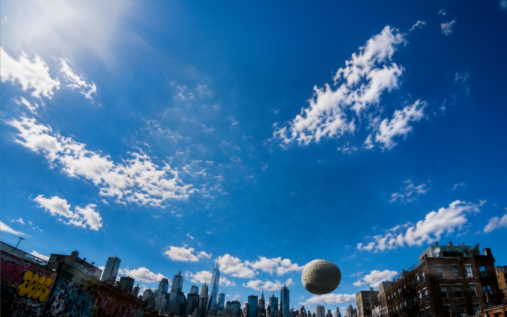
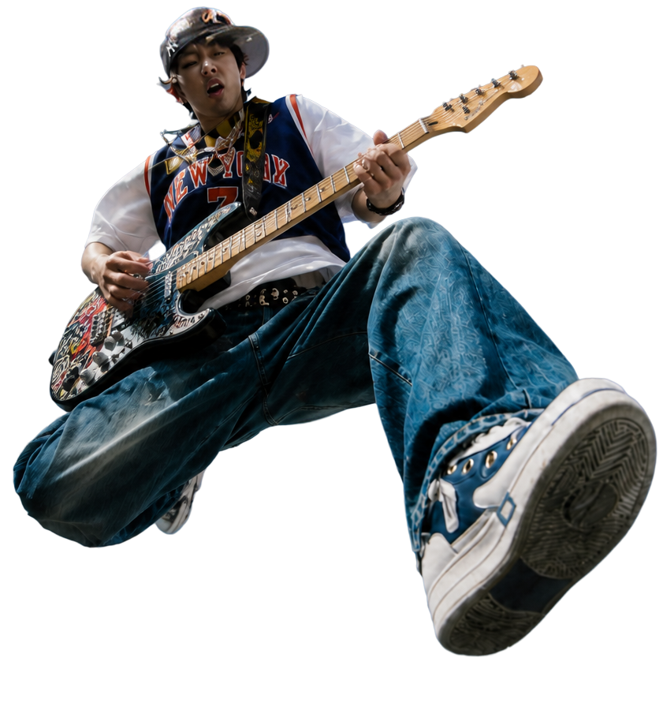
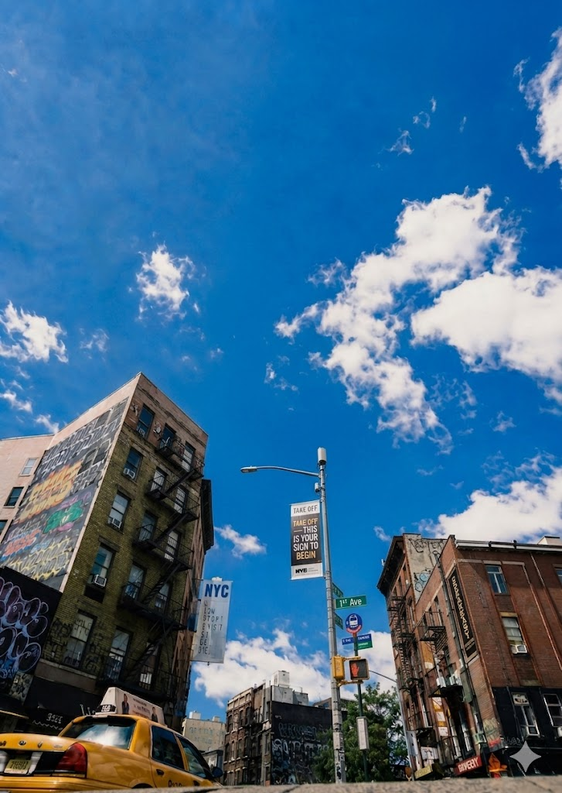
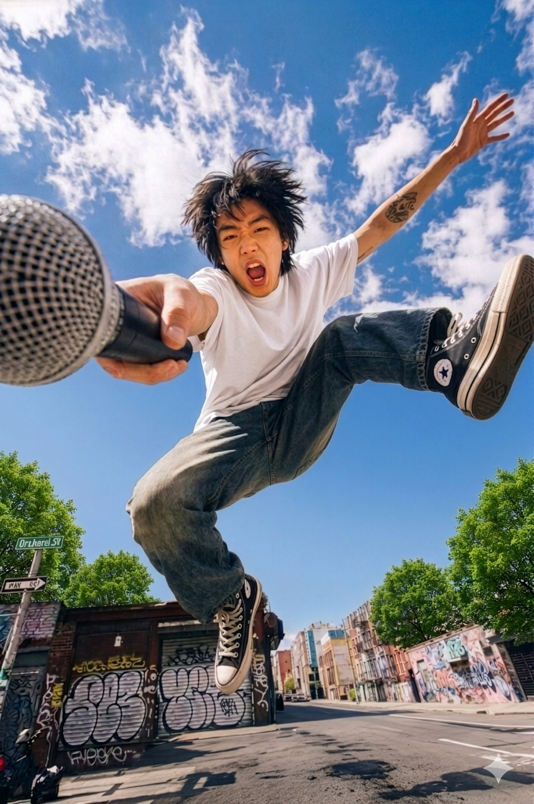
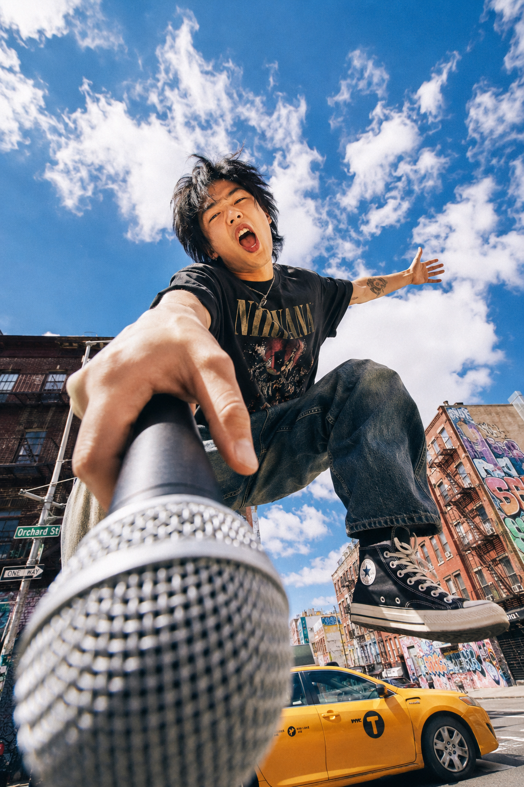
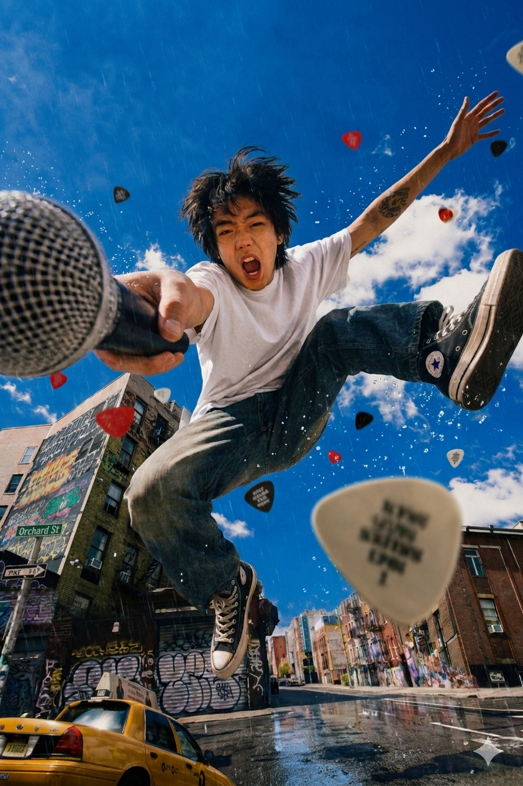
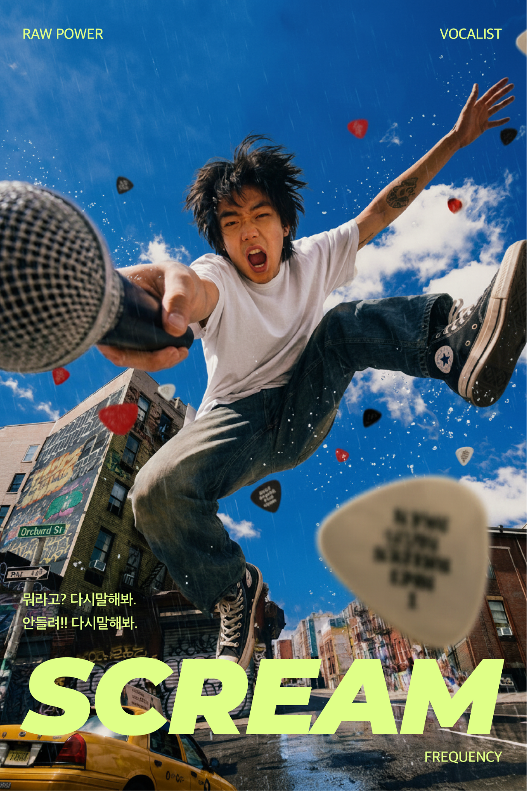
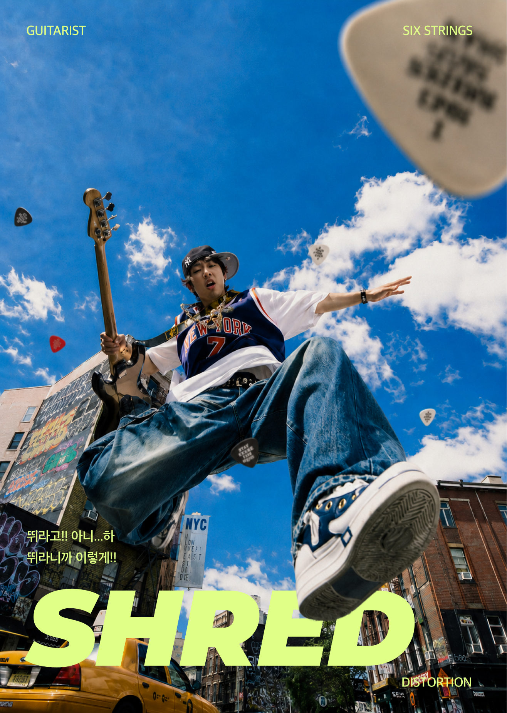

The Power Of
Real Visual


MEANING
이미지가
주는 힘
이미지는 텍스트보다 먼저 몸에 닿는다. 기타 픽이 렌즈를 향해 날아오는 순간, 보는 사람은 피할 틈이 없다. 언어가 의미를 설명하는 동안 이미지는 이미 충격을 끝낸다. 이 시리즈는 그 찰나를 설계한다 — 공중에 뜬 몸, 공간으로 해체되는 오브젝트, 화면을 점령하는 타이포가 동시에 충돌하며 하나의 야생적인 에너지를 만든다.
PROCESS
이미지 생성 과정
(1) A male vocalist in extreme mid-performance motion — body twisting forward with full kinetic energy, microphone extended toward the camera. Background: vibrant urban street with colorful graffiti walls and blown-out sky. Low-angle worm's-eye shot that gives the subject monumental, overwhelming presence. Editorial concert photography meets street fashion. High contrast, saturated color. Cinematic.



(1)
(2)
(3)
(2) Revise composition: shift the microphone to the LEFT side of frame, intentionally cropped at the left edge — the cut-off creates tension and instability. The subject's body should show more extreme torsion, as if mid-air or violently off-balance. The crop amplifies raw energy; the viewer shouldn't feel safe.
(3) Add guitar picks exploding through the air around the subject — multiple sizes, some sharply in-focus in the foreground, others motion-blurred in the distance. Match the reference palette: lime yellow, red, translucent white, with picks catching harsh light. The picks aren't decorative — they radiate outward from the performer like shrapnel, extending the sense of sonic explosion beyond the body.
VISUAL KEYWORD
ⓐ-4
사진유형
매우 역동적인 움직임
ⓑ-3
디자인요소
컬러풀 배색
ⓒ-5
타이포그래피
여러가지 서체꼴 활용 / 혼합하여
ⓓ-6
비주얼랭귀지
strong / wild
SERIES
SH!!!
마이크를 향해 몸 전체를 던지는 순간. 화면 왼쪽으로 잘려나간 마이크는 프레임 밖에서 당기고, 피사체는 그쪽으로 빨려들 듯 뻗는다. 기타 피크들이 공중에 흩어지면서 소리가 눈에 보이는 것처럼 만들어진다. 하단의 손글씨 같은 대사 — "뭐라고? 다시말해봐. 안들려!!" — 가 이미지의 에너지를 언어로 받는다. SCREAM. 지르는 것에 대한 포스터.

